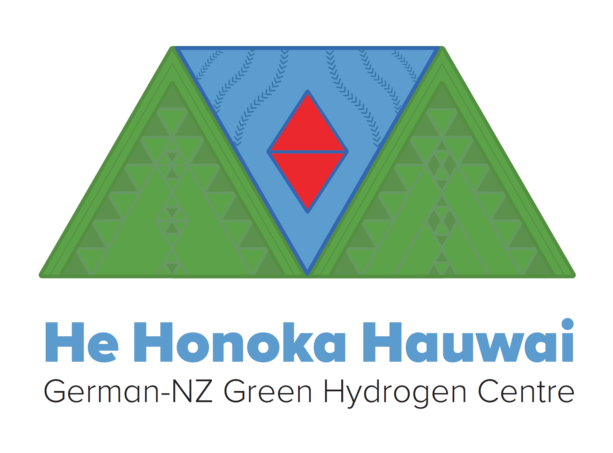

He Honoka Hauwai
German-NZ Green Hydrogen Centre
Oct 2021 – Sep 2026
Co-Leader · BMBF (Germany) / MBIE (New Zealand) · 760 k€
About this project
Bilateral German-New Zealand research centre for green hydrogen, jointly run by Hereon and the University of Otago.
Related publications
Role of Elemental Substitution on Hydrogen Incorporation in Characteristic Ti/Fe-Based Oxides
A. J. E. Rowberg, S. Kang, K. Sellschopp, P. Jerabek, T. W. Heo, B. C. Wood
ACS Appl. Energy Mater., 9, 1242–1253 (2026) · doi:10.1021/acsaem.5c03738 ·
@article{Rowberg2026c,
author = {A. J. E. Rowberg and S. Kang and K. Sellschopp and P. Jerabek and T. W. Heo and B. C. Wood},
title = {{Role of Elemental Substitution on Hydrogen Incorporation in Characteristic Ti/Fe-Based Oxides}},
journal = {ACS Appl. Energy Mater.},
year = {2026},
volume = {9},
pages = {1242–1253},
doi = {10.1021/acsaem.5c03738},
}Predicting hydrogen storage capacity loss of FeTi by ab initio thermodynamic modelling of Fe–Ti–Si phase equilibria
L. Dinachandran, E. Alvares, K. Sellschopp, T. Klassen, P. Jerabek, A. L. Garden
Acta Mater., 301, 121514 (2025) · doi:10.1016/j.actamat.2025.121514 ·
@article{Dinachandran2025c,
author = {L. Dinachandran and E. Alvares and K. Sellschopp and T. Klassen and P. Jerabek and A. L. Garden},
title = {{Predicting hydrogen storage capacity loss of FeTi by ab initio thermodynamic modelling of Fe–Ti–Si phase equilibria}},
journal = {Acta Mater.},
year = {2025},
volume = {301},
pages = {121514},
doi = {10.1016/j.actamat.2025.121514},
}High Ionic Conduction in Rb- and Cs-Mixed Cation Amide for Energy Storageopen access
T. T. Le, K. Sellschopp, F. Murgia, A. L. Garden, S. Bordignon, J. P. Embs, M. R. Chierotti, A. Schökel, F. Karimi, P. Jerabek, T. Klassen, C. Pistidda
Small, 2502943 (2025) · doi:10.1002/smll.202502943 ·
@article{Le2025b,
author = {T. T. Le and K. Sellschopp and F. Murgia and A. L. Garden and S. Bordignon and J. P. Embs and M. R. Chierotti and A. Schökel and F. Karimi and P. Jerabek and T. Klassen and C. Pistidda},
title = {{High Ionic Conduction in Rb- and Cs-Mixed Cation Amide for Energy Storage}},
journal = {Small},
year = {2025},
pages = {2502943},
doi = {10.1002/smll.202502943},
}